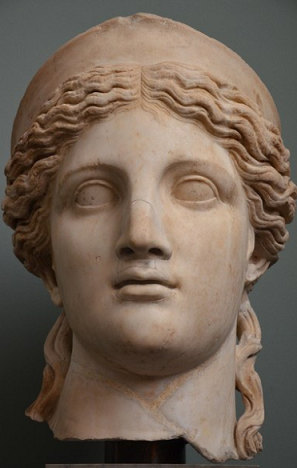

I
J
Juno
Roman origin. Goddess of Marriage and Childbirth, with heavy additions based off of the Greek Hera. Sometimes titled as ‘the queen of the sky’ and wife of Jupiter, mother of Mars and Vulcan. In many cases, Juno and Hera are intertwined and treated as the same goddess; their characteristics and mythology mirror each other's because the Romans combined so much from the Greek Hera into their own prime goddess. For example, like her Greek counterpart, Juno's relationship with her husband was often strained, and many of the Greek myths surrounding the pair were adopted into the Roman versions of the gods’ lives.

Juno, Ny Carlsberg Glyptotek museum, Copenhagen
Related References:
Hera
Vulcan
Zeus
K
L